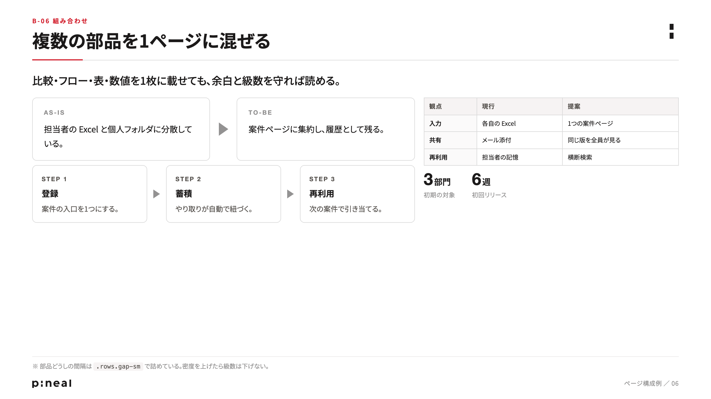

PINEAL SLIDE HTML
部品を組み合わせる。
必要なら、自由につくる。
v3の色・文字の階層・余白を出発点に、伝えたい内容に合わせて構成を選ぶためのHTMLテンプレートです。標準の構成、部品の組み合わせ、独自のレイアウトを使い分けられます。

比較・フロー・表・数値をひとつのページに。必要な部品を選び、間隔や比率を調整します。
COMPOSITIONつくり始める
HTMLを開いて確認し、コピーして編集できます。
AIに指示して、修正・再生成
編集元はHTML・CSS・画像素材です。文章だけの修正も、図解やページ構成の変更も、このファイルから行います。
たとえば「このページを比較と表の組み合わせに」「ここは既存部品にこだわらず、仕組みが伝わる図に」と指示できます。
制作・修正ガイドを読む ↗- 伝えたいことを決める。各ページの内容と役割を整理します。
- 構成を選ぶ・組み合わせる・自由に書く。内容に合う方法を使います。
- ブラウザで確認する。読みやすさ、関係性、画像欠落や見切れを見ます。
- 配布用のPDFを出す。スライド画面右上の「PDF」から印刷できます。